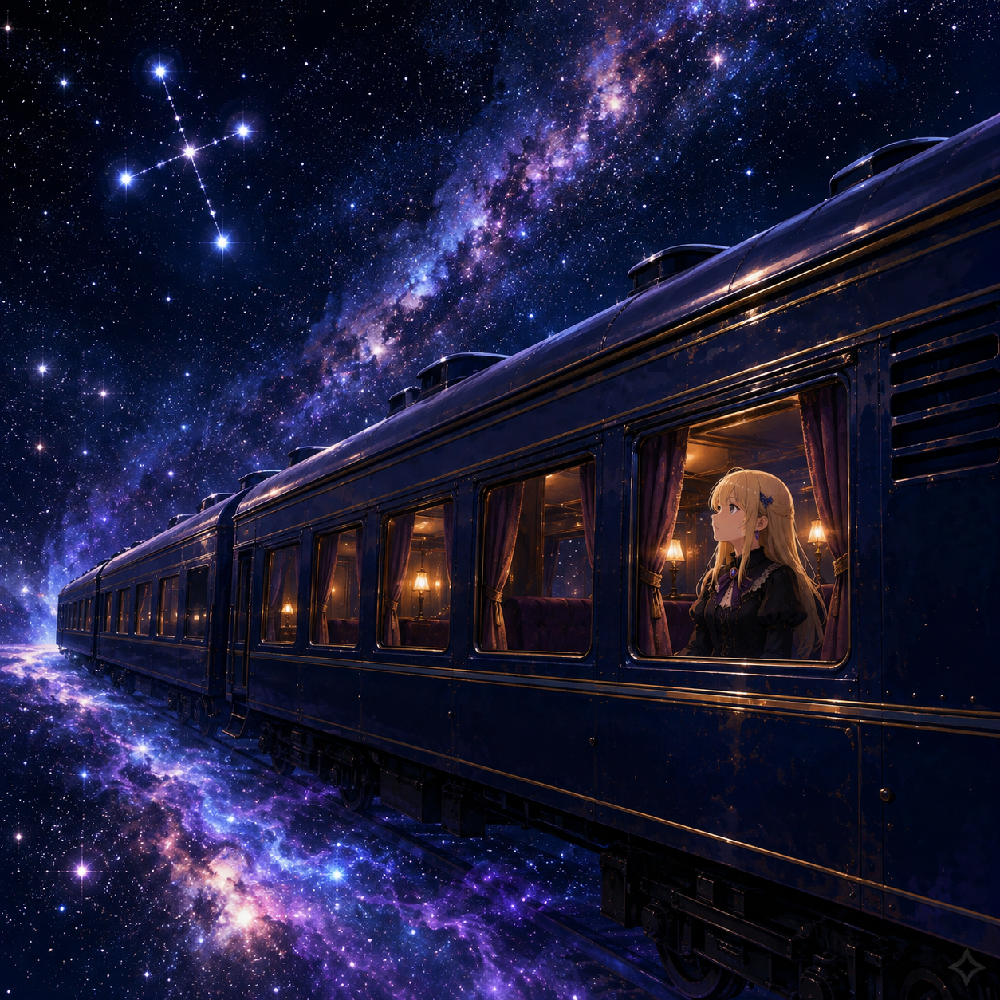

inspired by
銀河鉄道の夜
サザンクロス
NEON CIRCUIT

LISTEN
サザンクロス
STORY
INTRODUCTION
夜空を走る、 銀河の列車。
大切な誰かと過ごした時間は、 永遠には続かない。
別れの向こう側にある悲しみと、 それでも残り続ける記憶。
南十字星の光を見つめながら、 失ったものと、 これから生きていく意味を探す物語。
WORDS
LYRICS
サザンクロス
蒼く滲む星の海
静かな夜を越えて
名もない旅人たちは
光の向こうを見つめている
窓の外を流れてく
星屑の河と灯り
君が残した言葉だけ
胸の奥で揺れている
不思議な声に導かれ
終わりのない夜を行く
答えはまだ見えなくても
星はそこにあるから
SOUTH CROSS
夜空の向こうへ
目いっぱいの涙を乗せて
どこまでも行けるなら
君の待つ星の海へ
SOUTH CROSS
輝くその光
失くした夢を照らしながら
旅人たちは今日もまた
星の海を渡る
幾千の時を越えて
巡る光の中
幸せの意味を探して
僕らはここにいる
虹の河の彼方には
まだ知らない明日がある
君と見上げたあの夜空を
忘れたくはないから
届かない声だとしても
消えない記憶になる
離れていても繋がってる
そう信じたいんだ
SOUTH CROSS
もう届かない声でも
胸の奥で輝いてる
本当の幸せを探して
僕らは旅を続ける
SOUTH CROSS
夜を越えた先で
いつかまた出会えるのなら
あの日見上げた星空へ
願いを重ねよう
SOUTH CROSS
夜空の向こうへ
目いっぱいの涙を乗せて
どこまでも行けるなら
君がいた星の海へ
SOUTH CROSS
輝くその光
失くした夢を照らしながら
旅人たちは今日もまた
未来へと歩いてゆく
蒼く滲む星の海
静かな夜を越えて
名もない旅人たちは
君のいたところにたどり着く
ORIGINAL BOOK
銀河鉄道の夜
LIBRARY NOTE
失ったものは、
消えてなくなるわけじゃない。
遠い夜空で、
今も静かに光り続けている。
ONE FOREST MELODY × NEON CIRCUIT